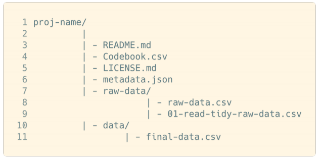

3.2 Documentar
Existen distintos estándares sobre qué información incorporar junto con los datos destacando la importancia de que estos materiales sean legibles por humanos y por inteligencia artificial (FAIR 2020). A continuación, se presenta un mínimo de los documentos necesarios para publicar los datos basado en la propuesta de Marwick (D’Andrea 2020).

Además de estos documentos, como se muestra en la imagen siguiente se recomienda incorporar metadatos para que los datos sean utilizables por inteligencia artificial (Cumpliendo con criterios FAIR) y libros de códigos (Nombre de las Variables) para que investigadores se familiaricen con el contenido (Tierney and Ram 2020). Incorporar los metadatos y el libro de códigos es fundamental para cumplir con los principios FAIR, ya que permite que los datos sean fáciles de encontrar para herramientas de búsqueda mediante conceptos clave y facilita la posibilidad de reutilización de los datos mediante una buena documentación que facilite su uso.

Como puede notarse estos estándares tienen mayor afinidad para los datos cuantitativos, no obstante, la descripción del proyecto, el readme con la información que contienen los datos, la licencia y un libros de preguntas, podrían ser de mucha utilidad para un investigador que se aproxima por primera vez a un conjunto de entrevistas, del mismo modo incorporar los análisis realizados por el equipo de investigación seria de utilidad para un nuevo equipo de investigación que pretenda trabajar con estos datos cualitativos.
En consideración de lo anterior es necesario hacer algunos cambios a estos esquemas. A continuación, se propone un conjunto de documentos comunes que deben estar incluidos, junto con una guía de como escribirlos en formato abiertos para cumplir con las recomendaciones del libro Managing and sharing research data: a guide to good practice (Corti 2019). Cabe destacar que los formatos abiertos se contraponen a los formatos propietarios para los cuales se requieren legalmente licencias pagadas como Word.docx.
3.2.0.1 Readme
El readme es un documento que debe responder las siguientes preguntas sobre la producción de la información (Tierney and Ram 2020).
Quién produjo la información
Cual es el contenido de los datos
Cuando fue producida la información
Dónde fue recolectada
Por qué se recopiló
Cómo se recopiló
Para crear este documento se suele utilizar el formato y lenguaje Markdowm de extensión .md, este formato posee la ventaja de no ser un formato propietario que permite incluir de modo sencillo distintos elementos útiles como los links las imágenes y las tablas. Le recomendamos realizar la escritura en este formato, para ello se puede escribir el documento en R Studio señalando como extensión .md o para quienes no manejen el software, pueden crear el documento en la página Dillinger. A continuación, presentamos los pasos mínimos para crear el documento.
En primer lugar, al acceder a la página Dillinger, encontrara una entrada de texto señalada como sector A y una salida con imágenes, enlaces y otros recursos posibles de Markdowm. Este tipo de lenguaje busca ser la forma más simple para los usuarios de dar formato a sencillas páginas web. Para generar un texto mínimo simplemente debe borrar el contenido en el sector y escribir un breve documento que responda las preguntas señaladas por (Tierney and Ram 2020). Para borrar fácilmente el contenido sugiero apretar el botón para ampliar el sector A y seleccionar todo el texto con el cursor (o con ctrl + a, habiendo hecho click en el texto).
Si desea agregar títulos, imágenes o enlaces puede utilizar los ejemplos de la página o aprender lo basico en la página de Markdowm, la cual contiene un breve vídeo y una sucinta guía.
Además, es fundamental incorporar en el README un esquema de los documentos presentes en la carpeta, incluyendo cada archivo en su respectiva carpeta.

3.2.1 Licencia
La licencia se puede crear fácilmente al publicar los datos en OSF. En la siguiente sección se señala como hacerlo.
3.2.2 Metadatos
La creación de los metadatos requiere previamente que se cree el identificador y la página web en OSF que almacenara los datos. Por ello la creación de los metadatos será posterior a la publicación. Cabe desacatar que el modo de crear metadatos difiere según si el tipo de material es una transcripción de entrevista en PDF o una base de datos en formato sav, stat o rda.
3.2.2.0.0.1 Documentos especiales según tipo de metodología
Para publicar datos cuantitativos se recomienda recopilar y producir los siguientes materiales con el objetivo de que los usuarios de la base de datos cuenten con información suficiente para utilizarla correctamente. Los siguientes documentos deben ser subidos en PDF y Blog de notas.txt con codificación utf8.
- Cuestionario
- Consentimiento informado
- Libro de códigos
- Ficha técnica
- Manual de usuario
- Descriptivos (Optativo)
- Publicaciones asociadas a los datos (Optativo)
- Descripción e información detallada para metadatos.
Para publicar datos cualitativos se sugiere documentar la siguiente información.
Transcripciones
registros audiovisuales (De ser necesario)
Investigar métodos y prácticas que estén completamente documentados
Copia en blanco del formulario de consentimiento informado con el número de aprobación del IRB
Detalles sobre el escenario de las entrevistas
Detalles sobre la selección de los sujetos de la entrevista
Instrucciones dadas a los entrevistadores
Instrumentos de recopilación de datos como cuestionarios de entrevistas
Medidas tomadas para eliminar identificadores directos en los datos (por ejemplo, nombre, dirección, etc.)
Cualquier problema que surgió durante el proceso de selección y / o entrevista y cómo se manejaron
Lista de entrevistas
References
Corti, Louise. 2019. Managing and Sharing Research Data: A Guide to Good Practice. 2nd edition. Thousand Oaks, CA: SAGE Publications.
D’Andrea, Dra Florencia. 2020. “Meetup R-Ladies Jujuy.” https://flor14.github.io/rladies-jujuy/presentacion.html?panelset=licencia#1.
FAIR, GO. 2020. “FAIR Principles.” GO FAIR. https://www.go-fair.org/fair-principles/.
Tierney, Nicholas J., and Karthik Ram. 2020. “A Realistic Guide to Making Data Available Alongside Code to Improve Reproducibility.” arXiv:2002.11626 [Cs], February. http://arxiv.org/abs/2002.11626.